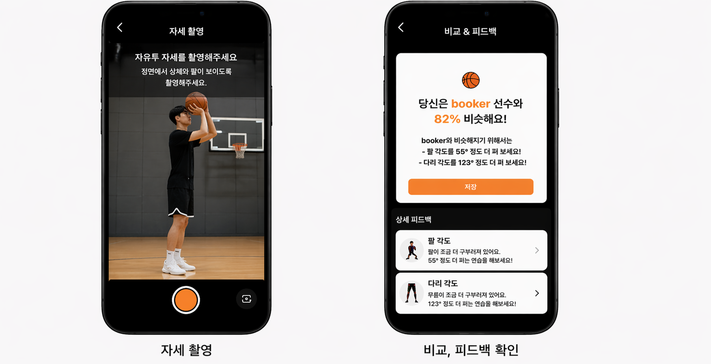

GRADUATION PROJECT
혼자 자유투를 연습하다
좋아하는 NBA 선수처럼 던지고 싶다는 생각에서
시작한,
자세 비교 기반 자유투 피드백 앱

김은수 (Team Lead / Computer Vision)
OpenCV와 YOLO 11을 활용한 키포인트 추출 및 자세 비교 로직 설계, 유사도 계산 방식 정의, 전체 분석 흐름 구현
홍승기 (Flutter App)
Cross-platform 앱 UI/UX 구현, 영상 촬영 및 서버 연동 기능 개발
허준영 (Backend)
Flask REST API 서버 구축, 영상 처리 및 분석 결과 반환 구조 구현
김기종 (Design)
앱 UI 디자인 및 전체 프로젝트 문서화
스테판 커리처럼
던지고 싶었습니다.
혼자 자유투를 연습하다 보니, 단순히 골을 넣는 것보다 좋아하는 NBA 선수의 슛폼과 닮게 던지고 싶다는 생각이 들었습니다.
하지만 내 자세가 실제로 얼마나 비슷한지, 무엇이 다른지 스스로 판단하기는 어려웠습니다.
그래서 농구에 대한 관심과 전공에서 배운 기술을 연결해, 사용자의 자유투 자세를 선수 자세와 비교하고 피드백까지 제공하는 앱을 만들게 됐습니다.
단순 비교가 아니라,
유사도를 기반으로 자세를 해석하는 구조를 만들고자
했습니다.
특히 팀장으로서 단순 기능 구현을 넘어서, 자세 비교 기준과 데이터 흐름을 먼저 정의하고 이를 기반으로 팀원들이 각 기능을 구현할 수 있도록 방향을 정리했습니다.
자세 데이터 추출
OpenCV와 YOLO 11을 활용해 사용자 자유투 영상에서 관절 키포인트 좌표를 추출했습니다.
유사도 계산 방식 설계
관절 좌표를 기반으로 각도(arm, knee)와 거리 차이를 계산하고, 이를 조합해 자세 유사도(similarity score)를 산출했습니다.
Flask API 서버 연동
Flutter 앱에서 촬영한 영상을 Flask REST API로 전달하고, 서버에서 분석 후 결과를 다시 반환하는 구조로 구성했습니다.
피드백 중심 결과 설계
단순 점수가 아니라 팔 각도, 무릎 각도 차이를 기반으로 사용자가 수정할 수 있는 피드백 형태로 결과를 구성했습니다.
사용자 영상 촬영
Flutter 앱에서 사용자가 자유투 동작을 촬영합니다.
서버 전송 및 분석
촬영된 영상은 Flask API 서버로 전달되며, OpenCV와 YOLO 11을 통해 관절 키포인트를 추출합니다.
선수 자세와 비교
추출된 관절 데이터를 선수 자유투 자세와 비교해 유사도와 각도 차이를 계산합니다.
결과 반환
분석 결과를 앱으로 다시 전달해 사용자 화면에 표시할 수 있도록 합니다.
피드백 제공
유사도뿐 아니라 팔 각도, 무릎 각도 등 실제로 수정할 수 있는 피드백 형태로 결과를 제공합니다.
찍고 끝나는 게 아니라,
다시 던지게 만드는 흐름
구현보다 먼저,
무엇을 기준으로 비교해야 하는지 고민했습니다.
처음에는 좌표를 그대로 비교하면 될 것이라고 생각했지만, 실제로는 촬영 각도와 타이밍에 따라 결과가 크게 달라졌습니다.
그래서 관절 기준, 비교 구간을 바꿔가며 10회 이상 테스트를 반복했습니다.
특히 자유투의 릴리즈 구간이 중요하다고 판단해 특정 구간을 기준으로 비교하는 방식으로 구조를 수정했습니다.
또한 단순 점수보다 수정 가능한 피드백이 중요하다고 판단해 결과 구조를 변경했습니다.
카메라 각도에 따른 좌표 왜곡 문제
동일한 자유투 동작이라도 촬영 각도와 거리에 따라 관절 좌표가 달라지면서 결과가 불안정해지는 문제가 있었습니다.
이를 해결하기 위해 좌표를 신체 기준으로 정규화하고, 어깨·골반을 기준으로 상대 좌표로 변환하는 방식으로 보정을 시도했습니다.
또한 사용자에게 정면 촬영 가이드를 제공해 입력 조건을 제한했습니다.
그 결과 일부 케이스에서 변동폭을 줄일 수 있었지만, 여전히 각도 차이에 따른 구조적 한계는 남아 있었습니다.
비교 기준 시점 불일치 문제
자유투는 연속 동작이기 때문에 어느 시점을 기준으로 비교할지에 따라 결과가 달라졌습니다.
이를 해결하기 위해 영상을 프레임 단위로 나누고, 릴리즈 구간(공을 던지는 순간)을 기준으로 비교하는 방식으로 로직을 수정했습니다.
일부 구간에서는 유사도가 더 안정적으로 계산되었지만, 모든 사용자 동작에 일관된 기준을 적용하기는 어려웠습니다.
유사도 계산의 신뢰도 문제
단순 좌표 거리 기반 비교에서는 실제 자세 차이를 제대로 반영하지 못하는 문제가 있었습니다.
이를 개선하기 위해 각도 기반 비교(팔, 무릎)를 추가하고, 거리 + 각도를 조합한 방식으로 유사도를 계산했습니다.
또한 이상치 제거 및 평균값 기반 보정을 적용해 일부 노이즈를 줄였습니다.
그 결과 일부 안정성은 개선되었지만, 실제 환경에서는 여전히 20~40% 수준의 변동이 발생했습니다.
영상 업로드 후 응답 시간이 길어지는 문제
사용자가 촬영한 영상을 서버로 전송한 뒤, 프레임 분석과 키포인트 추출까지 한 번에 처리하다 보니 응답 시간이 길어지고 결과 화면 전환이 늦어지는 문제가 있었습니다.
이를 줄이기 위해 전체 영상을 모두 처리하기보다 비교에 필요한 구간 중심으로 프레임을 나누어 처리하고, 응답 데이터도 필요한 값만 반환하도록 구조를 단순화했습니다.
그 결과 불필요한 처리량을 줄일 수 있었지만, 영상 기반 분석 특성상 즉각적인 응답을 만드는 데에는 여전히 한계가 있었습니다.
앱과 서버 간 데이터 형식 정리 문제
Flutter 앱에서는 촬영 영상과 사용자 정보를 전송하고, 서버에서는 분석 결과를 다시 앱에서 바로 사용할 수 있는 형태로 반환해야 했습니다.
초기에는 분석 결과를 그대로 내려주다 보니 앱에서 필요한 값과 서버 응답 구조가 맞지 않는 문제가 있었습니다.
이를 해결하기 위해 유사도, 팔 각도, 무릎 각도처럼 화면에 필요한 필드만 정리한 응답 구조로 다시 맞추고, 서버와 앱 사이의 데이터 포맷을 단순화했습니다.
혼자 잘 만드는 것보다,
기준을 맞추는 것이 더 중요했습니다.
협업에서는 기준 정리가 먼저였습니다.
프로젝트 초기에 각자 기능을 구현하면서, 앱, 서버, 분석 로직이 서로 맞지 않는 문제가 발생했습니다.
이를 해결하기 위해 비교 기준과 데이터 흐름을 다시 정의하고, 전체 구조를 기준으로 협업 방식을 조정했습니다.
입력 데이터가 결과를 결정했습니다.
같은 자유투 동작이라도 촬영 각도와 거리에 따라 결과가 달라지는 문제가 있었습니다.
실제 테스트에서 유사도 결과가 20~40% 이상 변동했고, 이를 통해 입력 조건의 중요성을 체감했습니다.
팀장의 역할은 연결과 정리였습니다.
단순히 역할을 나누는 것이 아니라, 서로 다른 구현을 하나의 흐름으로 연결하는 것이 중요했습니다.
특히 앱 → 서버 → 분석 → 결과 구조를 기준으로 팀원 간 기준을 맞추는 역할이 필요했습니다.
기술적으로는 한계를 명확히 이해했습니다.
2D 기반 자세 비교에서는 카메라 각도가 큰 변수로 작용하며 정확도에 한계가 있었습니다.
이후에는 3D Pose Estimation이나 촬영 환경 표준화가 필요하다는 방향까지 고민하게 되었습니다.